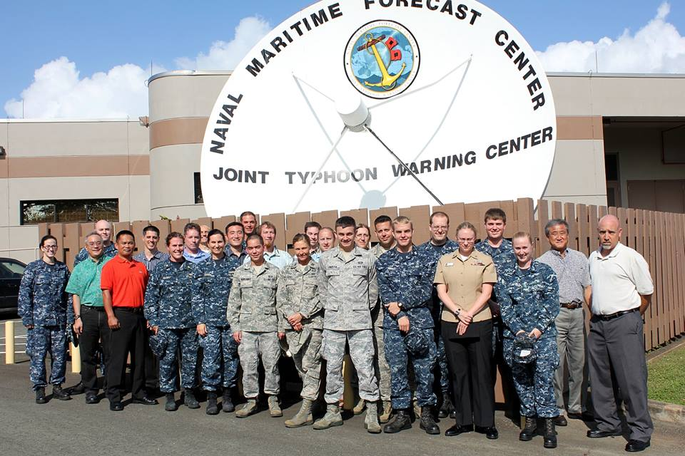

Ethan Wright, Graduate Research Assistant
Summary of Qualifications
- Experience with academic research
- Experience with Python, IDL and Fortran
- Master of Sciences in Meteorology
Education
- Ph.D. Oceanography - Florida State University, In Progress
- M.S. Meteorology - Florida State University, Defended December 2019
- B.S. Atmospheric Sciences - University of North Carolina at Asheville, May 2017
Professional Experience
- U.S. Navy Aerographer's Mate, 2008-2012
